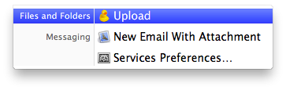

Using Drag & Drop¶
Note that dragging files is not limited to the Finder.app, but also works i.e. with attachments Mail.app or any other application supporting file promises.
Drag to a folder¶
Drag the file from the Finder.app or Windows Explorer to the browser window to upload to the current working directory or the folder hovered over.
Drag to a bookmark¶
Upload files without first opening a connection to a server by dropping the file(s) onto a bookmark item in the bookmark source list.
Local Disk Browser¶
You can browse your local hard disk within Cyberduck and drag files to the remote browser opened in another window or tab.

Drag to the Dock¶
macOS only
Drag files to the application icon in the Dock which will upload to the frontmost browser. A prompt is displayed to choose the bookmark to upload the files to (with the bookmark of the current browser selected by default if any).

Using Copy & Paste¶
Copy a file in the Finder.app or Explorer with Edit → Copy (macOS ⌘C Windows Ctrl+C) and paste it to a browser window in Cyberduck to upload with Edit → Paste (macOS ⌘V Windows Ctrl+V).

The Service menu¶
macOS only
When selecting files in the Finder or another application with references to files and folders, choose the item Services → Upload (with the Cyberduck icon) in the application menu to launch Cyberduck and upload the items selected to the bookmark you choose. This action is also available in the context menu (right-click on files or folders) in the Finder.
{kind=link}
Note
Make sure in System Preferences → Keyboard → Keyboard Shortcuts → Services → Files and Folders the item Upload with Cyberduck is selected.

Preferences¶
Transfers → General → Uploads → Upload with temporary filename¶
An option to upload with a temporary name and rename the file after the transfer is complete. An upload that is not complete, will not be renamed. This is useful for uploading to watch folders, that should only pick up a file once the upload is complete. To specify a different temporary filename pattern, use the hidden configuration option
defaults write ch.sudo.cyberduck queue.upload.file.temporary.format "'{0}-{1}'"
where {0} is the original filename and {1} is a random UUID. The default setting uses a temprary filename of filename-uuid.